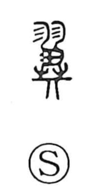

翼

Uncategorized
Kun: tsubasa | On: yoku
wing
Explanation
A phono-semantic character: the element 羽 conveys the idea of feathers and wings, while 異 serves as the phonetic, indicating the on reading yoku. In bronze inscriptions, 異 itself was used with the senses of helping and guarding, seen in expressions glossed as yokurin, “to take someone under one’s wing,” and kyuyoku, “reward and protection.” 異 thus stands as the original graph, and with the later addition of 羽 the form became 翼, making the image of a wing explicit. The Shuowen straightforwardly glosses it as hane, “wing(s).”